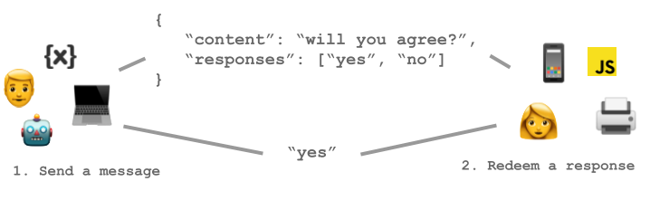

A serverless communication platform for request <-> response based messaging.
Embeddable into any system, adoptable for any use case.

- 🦸🏼♂️ Simple interface served via Webhoocks, REST and JS SDK
- 🤖 Works between humas, machines, systems and devices
- 🔑 Token-based auth/rbac. No Registration or login
Get started
API